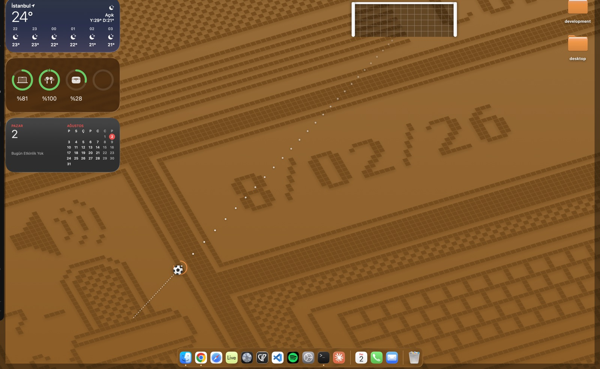
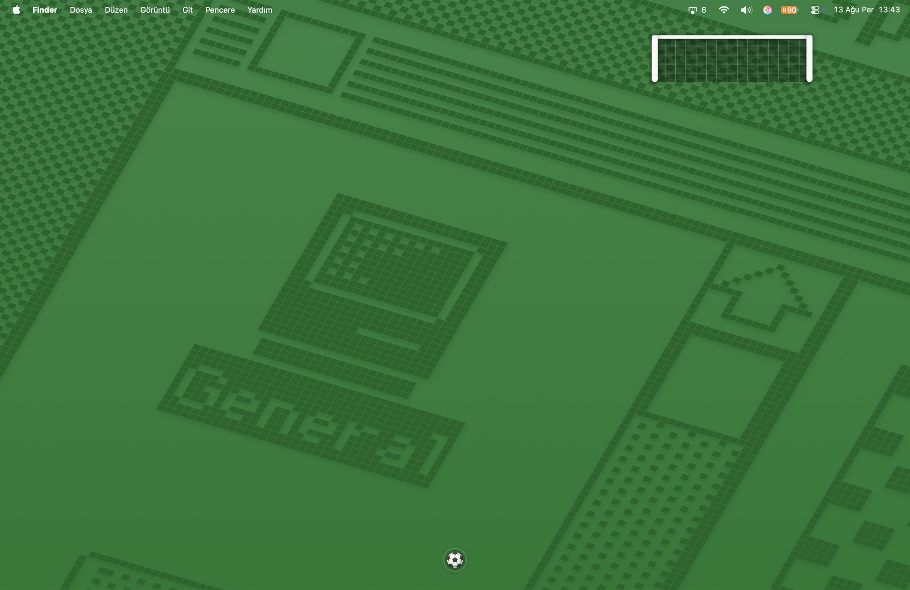

Your whole screen is the pitch.
A goal and a ball float above everything you are working in. Pull the ball back with the mouse, let go, and try to score across your own desktop. There is no game window — nothing to move, nothing to resize, nothing to close.
$2.99, paid once · macOS 13 or later · Apple silicon · about a megabyte

How it plays
One gesture, and a target that stops holding still
There are no levels, no modes and no menus to learn. The difficulty is the goal itself, and it only gets harder because you are getting better.
-
Pull and release
Drag the ball away from where you want it to go. A ring around it runs green to red as you stretch, and the dotted path shows the real shot.
-
Power is a real decision
Under about a third of the pull the ball cannot reach the goal at all. A third to a half only gets there from close range. Judging the distance is the shot.
-
Score and the goal narrows
Every goal in a row takes a slice off the mouth, down to about half width. Miss once and it opens back up.
-
From three in a row it drifts
The goal starts sliding while you aim. That is the whole difficulty curve — a target that stops holding still once you are good at it.
-
A miss costs you the angle
The ball stays exactly where it stopped, so your next attempt is taken from wherever the last one abandoned you.
-
The posts are real
The ball bounces off the actual circle of the post, so hitting one can send it anywhere. It feels like bad luck because it is.
Staying out of the way
Clicks fall straight through
Deskick covers the screen but listens only while your cursor is actually on the ball. Everywhere else it is transparent to the mouse, so your editor, your browser and your Dock behave exactly as if it were not running.
Clicking the ball never takes focus away from the app you were typing in, either — the window is built so that it cannot become the active one. There are deliberately no keyboard shortcuts, for the same reason.
The ball is also the only thing on your desktop that is yours to lose track of, so it breathes gently while it waits.

A desk toy, not an app
It lives in the menu bar and stays out of your way while it waits
No Dock icon, no window in your app switcher, no notifications. The menu-bar icon carries the live score, and everything else — new ball, reset, mute, volume, theme, always on top, open at login — is one click away in its menu.
-
Idle means idle
A ball at rest stops the animation timer dead — nothing is drawn and nothing is stepped. Sampled on a settled desktop, the app's main thread is asleep in every single sample.
-
Half a percent, and it buys something
All that keeps running is the audio engine holding the output awake, around 0.5% of one core. Let the output sleep and the first kick after a quiet spell loses its attack.
-
Nothing to download but the app
Every sound — the kick, the boards, the post, the goal — is synthesised in code when the app starts. Nothing is streamed and nothing is fetched.
-
It survives your day
Sleep, waking up, plugging in headphones or an external display: the audio engine rebuilds itself instead of quietly going silent by the afternoon.
-
Light and dark
Follows your system appearance, or pin it to one. Everything it draws carries its own soft shadow so it stays readable on any wallpaper.
Price
One price, once
No subscription, no in-app purchases, no ads, no "pro" version withholding half the game. You buy it and it is yours.
- Every future update to Deskick is included.
- Works on all your own Macs through Family Sharing.
- Nothing is locked, timed or held back.
Questions
Before you ask
Does it get in the way while I work?
That is the one thing it is built not to do. Outside the ball it is transparent to the mouse, it cannot take keyboard focus, and it never raises itself over a full-screen app. If you want it gone for a while, Show / Hide is in the menu.
What about multiple monitors?
Deskick plays on your main screen. If enough people want the ball to roam across displays, that is a fair thing to add — say so and it will get looked at.
Can it bounce off my actual windows?
No, and that is on purpose. Tracking every window's edges live would mean asking for accessibility permissions, and a small toy should not be demanding that kind of access.
Does it need the microphone, camera, or my files?
None of them. It asks for no permissions at all.
Will it drain my battery if I leave it open?
No. When the ball is at rest there is no timer running and nothing being redrawn — sampled on a settled desktop, the main thread is asleep in every sample. What is left is the audio engine keeping the output awake, about half a percent of one core, and that is what stops the first kick after a quiet spell from arriving without its attack.